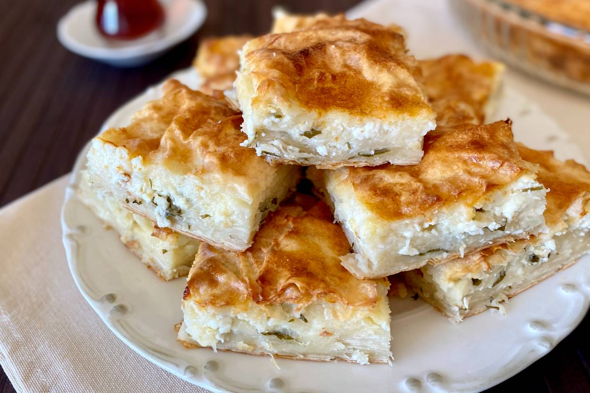

Cheese Borek

Description
"Peynirli borek" is a Turkish pastry made by layering thin yufka dough sheets with a savory filling of crumbled feta cheese, fresh parsley, dill, and optional garlic and red pepper flakes. Each layer is brushed with butter or olive oil before assembly. Once layered, it's baked until golden and crispy, then sliced into portions for a delightful savory pastry that's perfect for snacking or as an appetizer.
Ingredients
- Yufka dough
- Feta cheese, crumbled
- Fresh parsley, chopped
- Garlic (optional), minced
- Red pepper flakes (optional)
- Butter or olive oil for brushing the dough
- Black pepper, for seasoning
Instructions
- Prepare the cheese filling by mixing crumbled feta, chopped parsley, dill, and optional minced garlic and red pepper flakes.
- Layer yufka or phyllo dough sheets in a baking dish, brushing each layer with melted butter or olive oil.
- Spread the cheese mixture evenly between the layers.
Finish with a final layer of dough on top, brushing it with more butter or oil.
- Score the top to create portions.
- Bake at 350°F (175°C) until golden and crispy, about 30-40 minutes.
- Allow it to cool slightly before serving. Enjoy your peynirli borek!
Return to the Menu